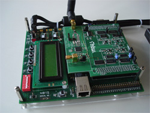
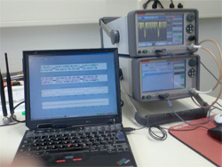

Laufende Infrastruktur-/ Forschungsprojekte
BMBF MIMO - PSSS
Moderne Funktechnik in Gebäuden
Funkstandards wie Bluetooth und WLAN haben bereits unzählige Haushalte erobert, unzählige Geräte in Haushalt und Industrie wie z-B- Telefone, Headsets, Videodisplays, Fernbedienungen verfügen heutzutage über moderne Funksysteme, mit deren Hilfe Signale kabellos übertragen werden.
Das Spektrum potentieller Anwendungen ist breiter, es ist abzusehen, dass künftig
- Gebäudeautomatisierung
- industrielle Steuer-und Kontrollfunktionen
- medizinisches und geriatrisches Monitoring
- Unterhaltungselektronik
- Sicherheitstechnik
- Ablesen von Hauszählerständen
An der FHTW wurde gemeinsam mit einem Partner aus der Wirtschaft das Übertragungsverfahren Parallel Sequence Spread Spectrum (PSSS) für kurze Distanzen im Rahmen eines BMBF Projektes entwickelt. Das Verfahren ist seit 2005 Bestandteil des internationalen Standards IEEE 802.15.4.
Derzeitige Entwicklungen an der FHTW bauen darauf auf, um an die jeweilige Anwendung angepasste neue Funkübertragungsverfahren mit noch höherer Unempfindlichkeit gegenüber Störungen und Mehrwegeausbreitung und mit erhöhter Datenrate zu entwickeln.
Prototyp eines Transceiver-Moduls bestehend aus einem FPGA-Experimentierboard und einem an der FHTW entwickeltem Hochfrequenzteil
Entwicklungen an der FHTW
Moderne Halbleitertechnologie, digitale Entwurfsmethoden und neuere Theorien der Datenübertragung ermöglichen eine fortschreitende Digitalisierung der Empfängertechnik und sorgen damit für die weite Verbreitung kostengünstiger und flexibler Funkverfahren, die an die jeweilige Anwendung angepasst werden können.
Schwerpunkt der Entwicklungen an der FHTW sind MIMO (Vielfachantennensysteme - Multiple Input Multiple Output) und Kanalentzerrung für die Nahbereichsfunktechnik in Gebäuden (gefördert durch BMBF-AIF) als Physical Layer.
Entwickelt werden Transceiverelemente für Einträgersysteme (Single Carrier System) um den Hardwareaufwand und die Leistungsaufnahme gering zu halten.
Dabei wird durchgehend digitale Sender- und Empfängertechnik, einschließlich digitaler Synchronisation in FPGAs (Field Programmable Logic Array), mit Methoden des Model-Based-Design implementiert.
Begleitend werden zu den angewendeten nachrichtentechnischen Verfahren
- Synchronisationsverfahren für Träger, Symbole und Datenpakete
- Modulations- und Spreizverfahren
- Sensornetze
- Multisystem-Anwendungen
- Raummultiplex

Messplatz bestehend aus frei programmierbaren Mess-Sender und Empfänger, auf dem alle Funkverfahren in den alle interessierenden Funkverfahren implementiert werden können
Bitfehlerraten für PSSS mit Kanalentzerrung sowie für MIMO-PSSS bei einer maximalen Dispersion von 5 Symbolen (Simulationsergebnisse)
 den kompletten Artikel downloaden [ca. 1.8 Mb]
den kompletten Artikel downloaden [ca. 1.8 Mb]